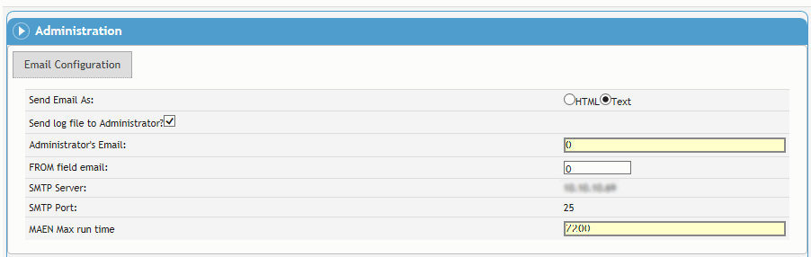

The MAEN system is used to send reminders and/or notification emails for time sensitive modules (such as incident investigation, actions, equipment calibration, and scheduling) in Cority.
MAEN must be turned on for hosted clients. If you are self-hosted, refer to the Cority Email Notification Utility Guide and/or contact your Cority representative for assistance with setup.
Email-related settings can be auto-configured based on Cority's initialization parameters to ensure that emails sent from the Cority application are delivered, even if you have not configured any email settings.
You can also define the “Email Prefix” system setting that will affix standard prefix text to the beginning of all outgoing emails.
Contact your Cority representative for assistance.
First, define application-wide settings in the Email Configuration section. For example, the server to be used for sending email, whether the administrator should receive a log of emails, and who serves as the administrator.

Then complete the remaining sections, corresponding to the types of email notification, as required.
In the Surveillance Recall, Actions, Equipment, Audits and Inspections, Surveys, Metrics, Case and Management of Change sections, define settings for automated emails for recalls, different kinds of corrective actions, change request workflow, etc. The Actions section includes separate tabs for different types of actions, such as safety, IH, environmental, etc.
In each of these sections, you can choose separate settings depending on whether the event you are notifying/reminding about is due or overdue. The Cority Email Notification Utility will generate emails according to your choices in the “Due Setting” area when the due date is approaching, and separate emails according to your choices in the “Overdue Setting” area once the date has past.
These settings will always use the current due date in the record; that is, if the due date is changed in the record, the notification settings are adjusted accordingly. If any notifications have been sent before the due date was changed, the count is reset for the Max # of Reminders.
In the Incident Investigation section, define settings for automated emails for each stage of an incident investigation.
Turning on MAEN for modules which have a large volume of historical records can cause the system to send a very large volume of emails. Contact Cority for support in understanding how to prevent these unwanted historical emails.
For more information, refer to the Cority Email Notification Utility Guide.
|
Setting Name |
Use this setting to specify: |
|---|---|
|
Email Configuration |
|
|
Send Email As |
whether the generated email should be sent as formatted in HTML or plain text |
|
Send log file to Administrator? |
whether a log file should be sent to the administrator |
|
Administrator's Email |
the administrator's email address |
|
FROM field email |
the “From” field of emails to be sent to the administrator |
|
SMTP Server |
the SMTP server address (DNS addresses are supported) |
|
SMTP Port |
the Port for the SMTP server (1 - 65535) |
|
MAEN Max run time |
the maximum time the MAEN process is allowed to execute |
|
Surveillance Recall, Actions, Equipment, Audits and Inspections, Metrics, Management of Change |
|
|
Enable/Disable |
whether to enable generated emails of this type |
|
(Management of Change only) |
if selected, all open records are included in the email; if not selected, only due and overdue records are included |
|
(Actions section only) |
selected by default; clear to include only Due and Overdue open actions |
|
Copy individuals in the IncidentInvestigationEmail look-up table on email notifications? (This field appears only in Actions, and only on some of the tabs) |
whether to copy this email to people involved in the investigation (those whose email addresses are listed in the IncidentInvestigationEmail look-up table) |
|
Send Notification |
whether to send notifications, and how many days before (Due setting) or after (Overdue setting) the due date |
|
Send Reminders |
whether to send reminders, and how often |
|
(Surveillance Recall section only) |
selected by default; clear to exclude non-mandatory surveillance activities from Due and Overdue notifications and reminders |
|
Max # of Reminders (In the Surveillance Recall function, separate fields for non-mandatory and mandatory activities) |
the maximum number of reminders to be sent |
|
Letter sent with notifications/reminders |
whether a letter should replace the text in the notification/reminder, and which letter template should be used |
|
Send Email To |
whether the email should be sent to the employee, the supervisor, or both |
|
On each Actions tab, choose the applicable GDDLOFB. |
|
|
Incident Investigation |
|
|
Enable/Disable |
whether to enable generated emails of this type |
|
On the Init.Investigation (Supervisor) tab only: If your company policy is for users to initiate the investigation by choosing Actions»Supervisor Email, select Only send if “Supervisor Email” action triggered. |
|
|
Copy individuals in the IncidentInvestigationEmail look-up table on email notifications? |
whether to copy this email to people involved in the investigation |
|
Send Reminders |
whether to send reminders, and how often |
|
Max # of Reminders (In the Surveillance Recall function, separate fields for non-mandatory and mandatory activities) |
the maximum number of reminders to be sent |
|
Letter sent with notifications/reminders |
whether a letter should replace the text in the notification/reminder, and which letter template should be used |